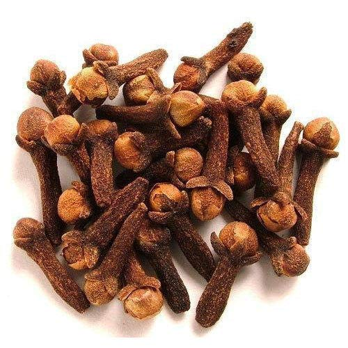

लवंग विषयी माहिती

प्रस्तावना
मसाले पिकास लवंग हे एक पीक अतिशय महत्वाचे स्थान असलेले किमती पीक आहे. भारतात प्रामुख्याने हे पीक केरळ,
तामिळनाडू आणि कर्नाटक राज्यात घेतले जाते.
लवंगाचा उपयोग अन्न पदार्थांना स्वाद व चव देण्यासाठी तसेच अनेक
प्रकारच्या औद्योगिक उत्पादनात लवंग तेलाचा उपयोग होतो. टूथपेस्ट, दातदुखी वरील औषधे, पोटातील विकारांवर औषधे
तसेच उत्तम प्रतीची अत्तरे सुवासिक साबण व व्हॅनिला तयार करण्यासाठी लवंग तेलाचा उपयोग होतो. लवंगापासून 15 ते
17 टक्के तेल मिळते.
हवामानातील साधर्म्यामुळे केरळ प्रमाणेच महाराष्ट्रातील कोकण विभागात लवंग लागवडीस चांगलाच वाव आहे. कोकण कृषि
विद्यापीठाने विद्यापिठांतर्गत असणा-या विविध संशोधन केंद्रावर लवंगेची लागवड केली जाते. आणि त्यामध्ये पिकांची
वाढ व उत्पन्न समाधानकारक असल्याचे दाखवून दिले आहे.
त्यामुळे कोकण कृषि विद्यापीठाबरोबरच कोकणातील जिल्हा
परिषदा शेतक-यांना लवंग लागवडीसाठी प्रोजेक्ट देत आहेत. आणि त्यासाठी लवंग रोपांचे वाटप केले जात आहे.
आपण मसाल्यात वापरतो ती लवंग म्हणजे लवंगाच्या झाडावरची कळी होय. पुर्ण वाढलेल्या कळया काढुन उन्हात वाळविल्या
की, लवंग तयार होते.
परंतु त्या तशाच वाढू दिल्यास त्यांचे फूलांमध्ये रूपांतर होते आणि नंतर फळात म्हणजेच
एकाकळीपासून एक लवंग किंवा एक फळ तयार होते.
हवामान व जमीन
लवंग हे उष्ण कटिबंधातील झाड असून त्यास उष्ण दमट हवामान लागते. समुद्रसपाटीपासून 900 मीटर उंचीपर्यंत ते येऊ
शकते. 20 ते 30 अंश सें.ग्रे. तपमान 1500 ते 2500 मिमि पाऊस आणि 60 ते 95 टक्के आर्द्रता या पिकास चांगली मानवते.
प्रखरसूर्याच्या उष्णतेमुळे पाने व खोडावर करपण्याची क्रिया होऊन झाडांच्या वाढीवर विपरीत परिणाम होतो. म्हणून
या पिकास सावलीची आवश्यकता असते.
लवंगाचे पीक बहूतेक सर्व प्रकारच्या जमिनीत येत असले तरी अधिक खोलीच्या उत्तम
निच-याच्या आणि सेंद्रिय पदार्थाचे प्रमाण अधिक खोलीच्या उत्तम निच-याच्या आणि सेंद्रीय पदार्थाचे प्रमाण अधिक
आहे अशा जमिनी अधिक मानवतात.
भारतात लवंगाची लागवड ज्या भागात मोठया प्रमाणात झालेली आहे तेथे जवळजवळ प्रत्येक महिन्यात पाऊस पडतो आणि तापमान
सोम्य असते.
त्यामुळे तेथे लवंगाची लागवड उघडयावर केली जाते आणि पाणीपुरवठयाची गरज भासत नाही. याउलट आपल्याकडे
परिस्थिती आहे. त्यामुळे लवं झाडास उन व वा-यापासून संरक्षण मिळू शकेल असे आदर्श ठिकाणी म्हणजे नारळ किंवा
सुपारीची बांग, पुर्वेस उतार असलेल्या डोंर उतारावर तसेच दोन डोंगरांच्या दरीतील प्रदेशात पाणीपुरवठयाची सोय
असल्यास उघडयावर देखील लवंगाची लागवड यशस्वी होते.
नारळ किंवा सुपारीच्या बागेत लवंगेची लागवड करण्यापूर्वी एक महत्वाची गोष्ट लक्षात घेणे आवश्यक आहे.
ते म्हणजे
नारळ आणि सुपारीच्या झाडांमधील अंतर योग्य अंतरावर सुपारीची लागवड असेल अशा ठिकाणी हे आंतरपीक म्हणून घेता येते
आणि चांगले उत्पन्न मिळते.
पूर्वमशागत
योग्य अंतर ठेवलेल्या नारळ किंवा सुपारीच्या बागेत लागवड करावयाची असल्यास चार नारळ किंवा सुपारीच्या मध्यभागी
लवंगेचे रोप लावावे. सुपारी बागेमध्ये मात्र नंतरचे रोप दोन चौकोन मोकळे सोडून तिस-यात लावावे. दोन डोंगराच्या
दरीतील लागवड 6 x 6 मीटर अंतरावर करावी.
निवडलेल्या जागी 45 सेमी लांब रूंद व खोल खडडे उन्हाळयात खोदावे. खडडयाच्या मातीतील दगड वेचून काढून मातीमध्ये 2
ते 3 टोपल्या शेणखत मिसळावे आणि खडडा भरावा.
खडडा जमिनीपेक्षा थोडा अधिक उंच भरावा. समुद्रकिना-यावरील रेताड जमिनीत
खडडे भरताना खडडयाच्या मातीत अर्धी तांबडी माती किंवा शक्य असेल तर गाळाची माती वापरावी.
लागवड
लवंगाची लागवड कोणत्याही हंगामात केली तरी चालते. जोरदार पाऊस संपल्यानंतर लागवड करण्याचे फायदयाचे ठरते.
लागवडीसाठी दोन वर्षाचे रोप वापरावे.
अगोदरच भरुन ठेवलेल्या खडडयाच्या मध्यभागी रोपाच्या पिशवीच्या आकाराचा
खडडा उकरावा. रोप असलेल्या प्लास्टीक पिशवी, मातीत हुंडी फूटणार नाही अशा पध्दतीने काढून तयार केलेल्या खडडयात
रोप लावून भोवतालची माती दाबून घ्यावी.
खते
लवंगाच्या झाडास पहिल्या वर्षी 10 किलो शेणखत / कम्पोस्ट 20 ग्रॅम नत्र ( 40 ग्रॅम युरीया ) 18 ग्रॅम स्फूरद
(110 ग्रॅम सुपर फॉस्फेट) 50 ग्रॅम् पालाश ( 100 ग्रॅम् म्युरेट ऑफ पोटॅश ) द्याव. हि खताची मात्रा दरवर्षी अशाच
प्रमाणात वाढवावी.
व 15 वर्षानंतर प्रत्येक झाडास 50 किलो शेणखत / कंपोस्ट 300 ग्रॅम नत्र (600 ग्रॅम युरीया) ,
250 ग्रॅम स्फूरद ( 1500 किलो सुपर फॉस्फेट) 750 ग्रॅम पालाश ( 1500 किलो म्युरेट ऑफ पोटॅश ) द्यावे. ही खते दोन
हप्त्यात द्यावी.
लागवड केल्यानंतर तिस-या महिन्यात खताचा पहिला हप्ता व दुसरा त्यानंतर सहा महिन्यांनी
द्यावा. त्यापुढील वर्षापासून पहिला हप्ता पावसाळयाच्या सुरुवातीस व दुसरा पावसाळयाच्या शेवटी द्यावा.
आंतरमशागत व निगा
पहिल्या वर्षी लवंगाच्या रोपांना सावलीची व्यवस्था करणे जरुरीचे आहे. लवंगेच्या झाडाला पाणीपूरवठा करताना जमीन
सतत ओलसर राहिल मात्र दलदल होणार नाही याची दक्षता घ्यावी.
दलदलीमुळे मररोग येण्याची शक्यता असल्यामुळे ते
टाळण्यासाठी एकाचवेळी खूप पाणी देण्यापेक्षा थोडे थोडे पाणी अनेक वेळा द्यावेत. जमिनीत ओलावा टिकून राहण्यासाठी
रोपाभोवती 45 ते 60 सेमी पर्यन्त पालापाचोळयाचे आच्छादन करावे.
काढणी व उत्पन्न
लागवडीसाठी दोन वर्षाचे रोप उपयोगात आणलेले असल्यास लागवड केल्यानंतर 4 ते 5 वर्षात लवंगाच्या झाडास फूले येऊ
लागतात. फूले दोन हंगामात येतात. फेब्रूवारी मार्च च्या दरम्यान पहिले व प्रमुख उत्पन्न मिळते.
तर सप्टेबर
आक्टोबर महिन्यात दुसरे व अल्प प्रमाणात उत्पन्न मिळते. नवीन पालवीवर लवंगाच्या कळया येतात. कळीचा अंकूर
दिसायला लागल्यापासून 5 ते 6 महिन्यात कळी काढण्यासाठी तयार होते. गुच्छातील सर्व कळया एकाच वेळी काढण्यासाठी
तयार होत नाही.
कळयांचा घुमट पुर्ण वाढल्यानंतर त्यांना फिकट नारिंगी रंग प्राप्त होतो. अशाच कळयाची काढणी करावी
आणि त्या उन्हात वाळवाव्यात. साधारणपणे 4 ते 5 दिवसात कळया वाळतात. लवंगाच्या 15 ते 20 वर्षाच्या झाडापासून 2
ते 3 किलो वाळलेल्या लवंगा मिळतात.
रोग
पाने कुजणे : रोपांना तसेच पुर्ण वाढल ेल्या झाडांना या रोगाचा प्रादुर्भाव होतो. सुरूवातीस पानांच्या टोकांवर व
कडांवर काळसा ठिपके किंवा चटटे दिसून येतात. कालांतराने टोकाकडील भाग काळसर होतो किंवा पुर्ण पानच काळसर होते. अशी
पाने अकाली गळून पडतात.
टिक्का : या रोगामुळे कोवळया पानाच्या दोन्ही बाजूंवर तांबूस काळसर ठिपके निर्माण होतात. ठिपके पसरत जाऊन आकाराने
मोठेे होतात. पान पिवळे होते आणि कालांतराने गळून पडते.
डायबॅक : रेताड व निकस तसेच कमी निच-याच्या जमनीत लागवड केलेल्या झाडांना हा रोग प्रामुख्याने होतो. तसेच
पाणीपुरवठयात अनियमितपणा झाला तरी देखील हा रोग उदभवतो. या रोगाचा प्रादुर्भाव झालेल्या झाडावरील फांद्या
शेंडयाकडून जमिनीकडे वाळत जातात आणि कालांतराने संपूर्ण झाड वाळते. या रोगाचा प्रादुर्भाव उन्हाळा संपण्याच्या व
पावसाळा सुरु होण्याच्या सुमारास विशेष जाणवतो. या रोगावर पुढील प्रमाणे उपाय योजना करावी.
झाडावर रोग होवू नये म्हणून 1 टक्का बोडो मिश्रणाच्या वर्षातून फवारण्या कराव्यात. रोगाच्या प्रादुर्भाव
झालेली पाने व वाळलेल्या फांदया कापून टाकाव्यात.
डायबॅक झालेल्या झाडांच्या आळयात वयोमानाप्रमाणे 5 ते 10 लिटर पाण्यात 1 टक्का बोर्डोमिश्रण ओतावे व 15
दिवसाच्या अंतराने 1 टक्का बोडोमिश्रणाच्या तीन फवारण्या कराव्यात.
किडी
पाने खाणारी अळी – ज्यावेळी झाडास नवीन पालवी येते त्यावेळी पाने खाणा-या अळीचा उपद्रव आढळून येतो. कोरडया हंगामात
या किडीचा उपद्रव अधिक होतो. त्यामुळे नवीन पालवीचे अंकूर दिसू लागताच फवारणी करावी.
खोडअळी – अखंड काळया रंगाची व पिवळट पटटे असलेली केसाळ अळी फांद्या तसेच खोडांना भोके पाडून आत शिरते. त्यामुळे
फांद्या व झाडे वाळतात.